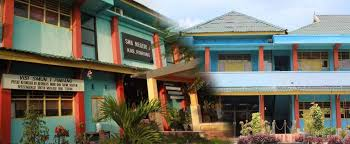
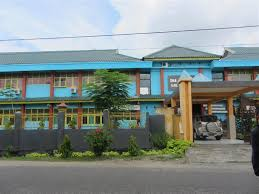
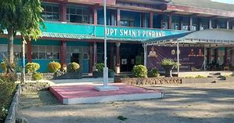
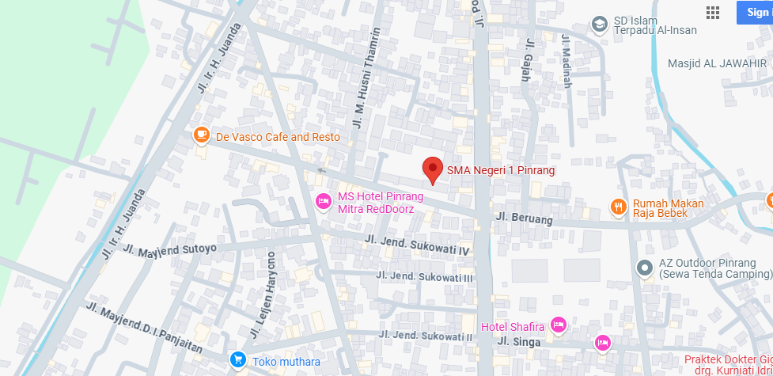

Selamat Datang di website SMAN 1 PINRANG
Rintisan Sekolah Bertaraf Nasional


Senyum(S),Ikhlas(I),Prima(P),Amanah(A),Komitmen(K),Antusias(A),Tertib(T),Akuntabilitas(A),Unggul(U)
Rintisan Sekolah Bertaraf Nasional
SMA Negeri (SMAN) 1 Pinrang, merupakan salah satu Sekolah Menengah Atas Negeri yang ada di Provinsi Sulawesi Selatan, Indonesia. Sama dengan SMA pada umumnya di Indonesia, masa pendidikan sekolah di SMAN 1 Pinrang ditempuh dalam waktu tiga tahun pelajaran, mulai dari Kelas X sampai Kelas XII. Pada tahun 2007, sekolah ini mengguna Kurikulum Tingkat Satuan Pendidikan sebelumnya dengan KBK. Sekolah ini merupakan salah satu sekolah terfavorit di Kabupaten Pinrang..
Visi Misi
VISI
Mewujudkan sumber daya manusia menguasai ilmu pengetahuan dan teknologi, beriman dan bertaqwa serta mampu mengaktualisasikannya dalam kehidupan sehari hari
5.0
MISI
Mempersiapkan lulusan yang menguasai ilmu dan teknologi, memiliki daya juang tinggi, kreatif, proaktif yang dilandasi iman dan taqwa
Meningkatkan pengetahuan dan kemampuan profesional tenaga kependidikan sesuai perkembangan
Menumbuhkan penghayatan, pengalaman terhadap ajaran agama termasuk kepedulian sosial yang semakin peka
SMAN 1 PINRANG
Tujuan umum:
Panjang
Rata-rata nilai yang diujikan sekolah atau UAS mencapai nilai 8,15
Rata-rata nilai yang diujikan sekolah atau UAN mencapai nilai 7,15
Proposi penerimaan mahasiswa di perguruan tinggi favorit di Indonesia melalui jalur PMDK 40 %, UMPTN 50 %, UMPTS 10 %
Menengah
Menjuarai bidang olahraga dan seni tingkat kabupaten
Mengikuti event penulisan karya ilmiah secara nasional
Mengikuti dan menyelenggarakan kompetendi keilmuan
Jangka Pendek
Rata-rata nilai mata pelajaran ujian nasional 6,00
Rata-rata nilai mata pelajaran ujian sekolah 7,00
Proposi penerimaan siswa di Perguruan tinggi faforit melalui jalur PMDK 45 siswa (20%), SPMB 126 siswa (50%) dari jumlah siswa yang tamat
Email: akunsma1pinrang@gmail.com
Telepon: (0421) 921127
Alamat: 5MW2+W74, Jl. Jend. Urip Sumohardjo No. 2, Jl. Urip Sumoharjo, Macorawalie, Kec. Watang Sawitto, Kabupaten Pinrang, Sulawesi Selatan 91212
 